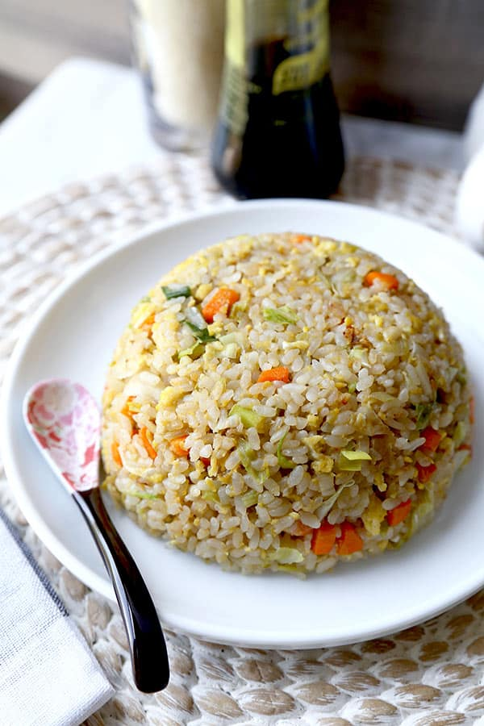

Fried Rice

Description
Fried rice is a dish of cooked rice that has been stir-fried in a wok or a frying pan and is usually mixed
with other ingredients such as eggs, vegetables, seafood, or meat. It is often eaten by itself or as an accompaniment to another dish.
Ingredients
- Garlic
- Onion
- Salt
- Butter
- Eggs
- Sesame Oil
- Soy Sauce
- Rice
Steps on how to cook
- Heat wok until it is very hot. Add butter in a wok
- Add onion and garlic and fry for a minute
- Add whisked eggs in the wok and scramble them
- Mix scrambled eggs and rice
- Add cooked rice, soy sauce, sesame oil, and toss well
- Kora is a big loser